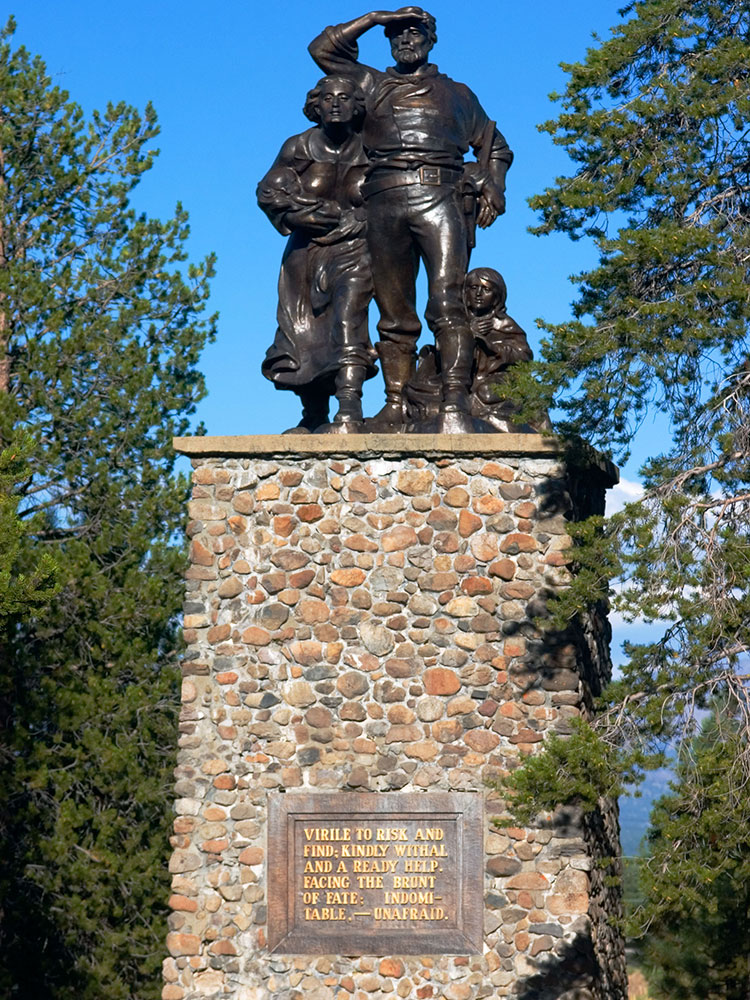
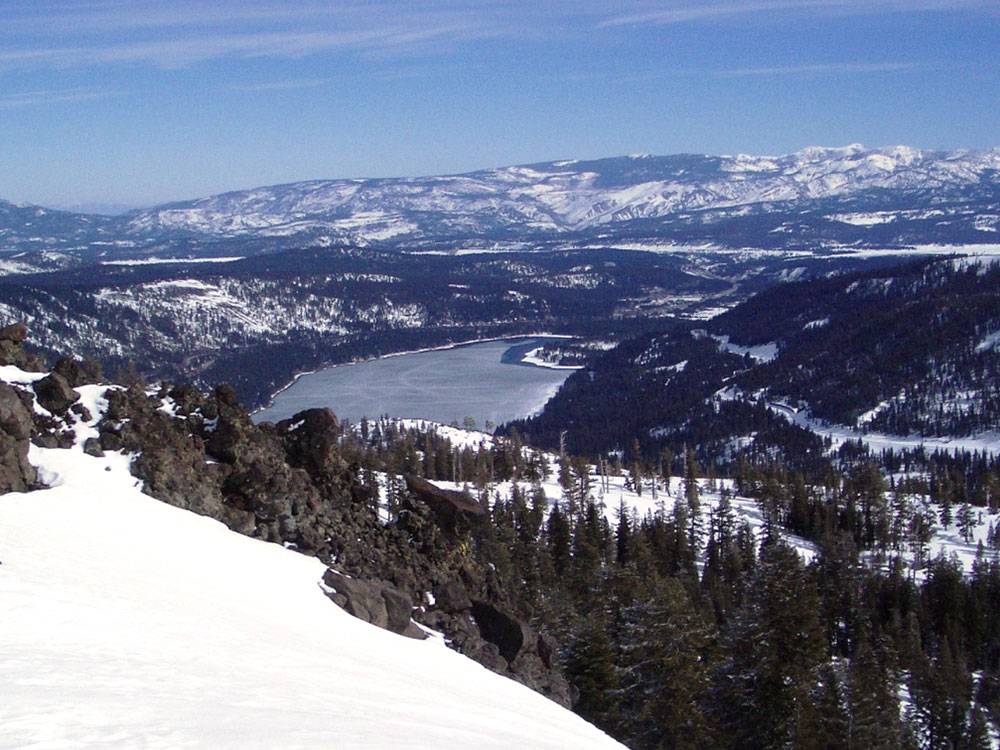
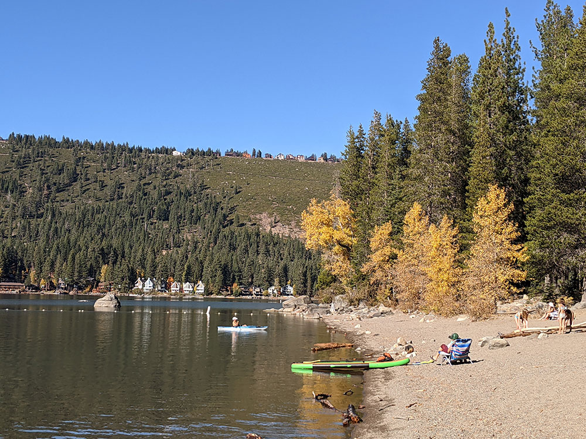
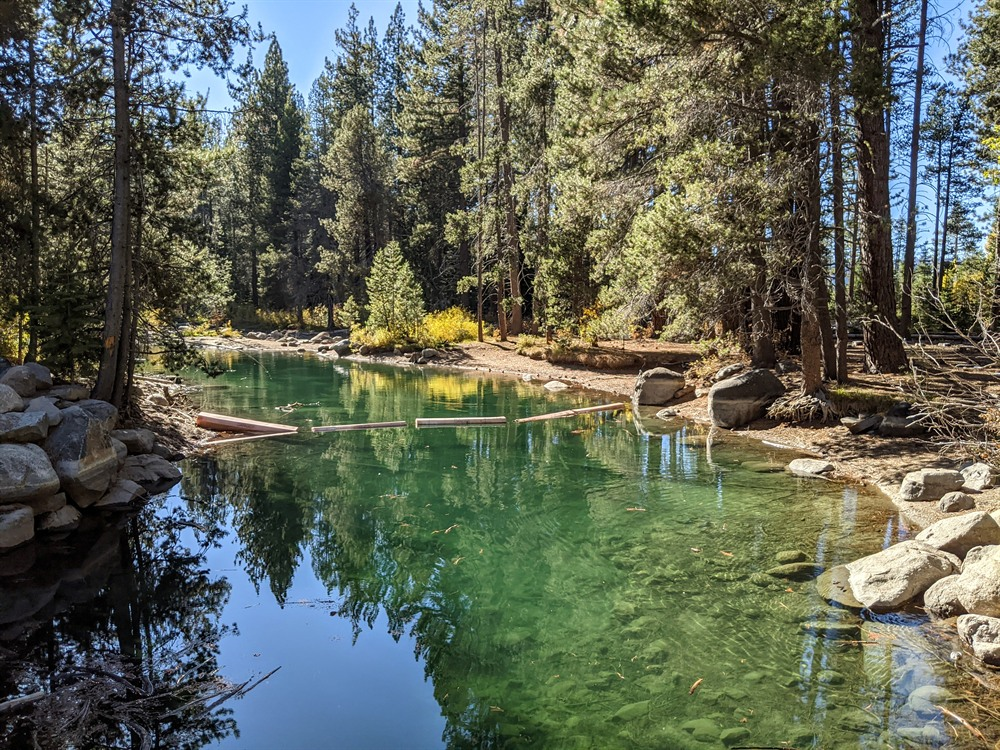
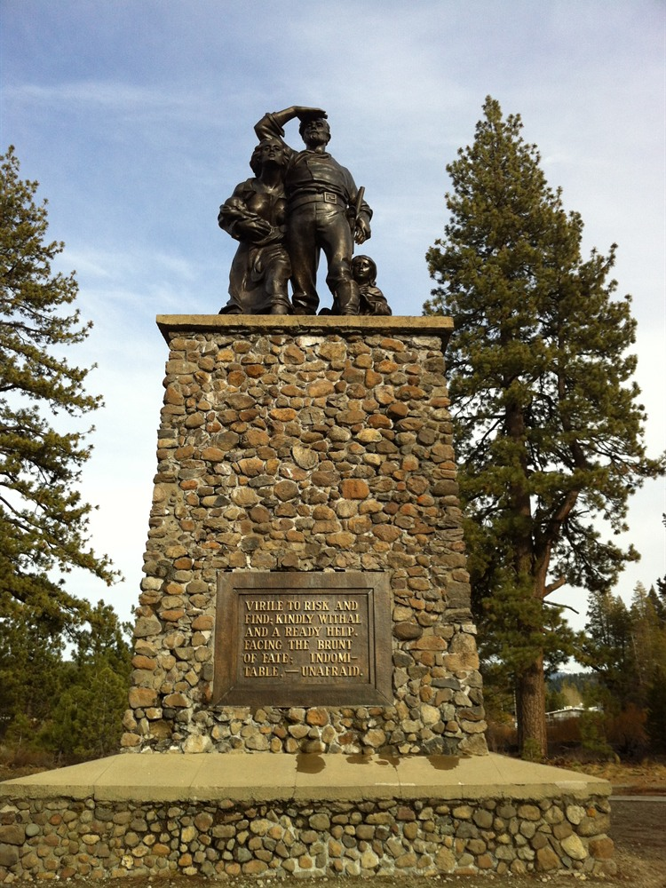

State park preserving the site of the Donner Camp, where members of the ill-fated Donner Party were trapped by weather during the winter of 1846-1847
Closed on Thanksgiving, Christmas, and New Years Day
Parking rates:
May 1 to September 30: $10.00 per vehicle for the day
October 1 to April 30: $5.00 per vehicle
Dogs allowed on the Lakeside Interpretive Trail, Zig Zag Trail, fire roads, and along the shore of Donner Lake except for China Cove Beach. Dogs are NOT allowed in the visitor center, on the half-mile Nature Trail, or China Cove Beach. Dogs are NOT allowed on designated ski trails when snow is present.
How to Get There
From Sacramento (68 miles): Take 16th St to CA-160 N/N Sacramento Fwy. Follow I-80 E to Donner Pass Rd in Truckee. Take exit 184 from I-80 E. Follow Donner Pass Rd to S Shore Dr.
Overview
Donner Memorial State Park near Truckee is a California state park that preserves the site where the ill-fated Donner Party was trapped by snow in the winter of 1846–1847, and it is also a popular Sierra Nevada spot for camping, hiking and swimming on the shore of Donner Lake. The state acquired the land around the monument in 1927–1928, and the park was established in 1928 to commemorate the pioneers. The Donner Camp site is a National Historic Landmark, designated in 1961. The Pioneer Monument, dedicated in 1918, has a pedestal 22 feet high that matches the depth of the snow the party faced, and a short trail leads to the boulder cabin site of the Murphy family. Visitors come to learn the story of the Donner Party and the Emigrant Trail at the visitor center, and to enjoy the lake, forest trails and mountain scenery in every season.
Access
The park is on Donner Pass Road at the east end of Donner Lake, just west of downtown Truckee in the Sierra Nevada, and it is easily reached from Interstate 80 at exit 184. Most visitors drive, and the trip from the Sacramento and San Francisco Bay Areas follows I-80 east over Donner Summit, where winter storms can bring chain controls and temporary closures. Lake Tahoe and Reno, Nevada, are within about an hour. Parking is charged year-round, with payment at the visitor center or by self-register envelope at the entrance kiosk, and the day-use area is open 7:00 AM to 8:00 PM. Dogs are allowed only on certain trails and along the lake shore, so check the posted rules.
Seasons
Summer is the busiest season, with camping, swimming, kayaking, paddleboarding and picnicking at Donner Lake. Fall brings crisp air and fewer crowds. The Truckee area gets heavy snow in winter, when the park is a place for snowshoeing and cross-country skiing rather than sledding, since there are no real hills, and dogs are not allowed on designated ski trails when snow is present. The campground and some facilities, including seasonal restrooms and concessions, operate mainly in summer, and day use may close when the park needs to be winterized, so check the California State Parks website for current conditions. The park is closed on Thanksgiving, Christmas and New Year’s Day.
Things to Do
Explore One of California's Most Historic Sierra Nevada Parks
Donner Memorial State Park is located near Truckee in the Sierra Nevada and commemorates the history of the Donner Party, pioneers who became stranded in the area during the winter of 1846-1847. The park combines rich California history with beautiful mountain scenery, forests, lakes, and outdoor recreation opportunities, making it one of the most popular destinations in the Lake Tahoe region.
Visit the Emigrant Trail Museum
The Emigrant Trail Museum is the park's primary historical attraction and features exhibits on the Donner Party, Native American history, westward migration, the transcontinental railroad, and the development of the Truckee region. Visitors can gain insight into one of the most well-known stories of the American frontier.
See Donner Memorial and Pioneer Monuments
The park contains several monuments dedicated to the pioneers who traveled through the Sierra Nevada. The Pioneer Monument is especially significant, marking the approximate depth of the snow during the harsh winter endured by the Donner Party.
Enjoy Donner Lake Recreation
Donner Lake provides opportunities for kayaking, paddleboarding, fishing, swimming, boating, picnicking, and relaxing along the scenic shoreline. Surrounded by forested mountains, the lake is a favorite destination for outdoor enthusiasts throughout the year.
Explore the Historic Emigrant Trail
Sections of the historic California Emigrant Trail pass through the park, allowing visitors to walk routes once traveled by thousands of pioneers heading west during the nineteenth century. Interpretive signs help explain the significance of the trail and its role in American history.
Enjoy Year-Round Outdoor Recreation
The park offers hiking, biking, camping, snowshoeing, cross-country skiing, wildlife viewing, and photography opportunities. Its location near Lake Tahoe and Truckee makes it a popular destination during all four seasons.
Top Trails
Interpretive Trail
Length: Approximately 0.5 miles loop
Elevation Gain: Minimal
Difficulty: Easy
This short trail travels through the historic area surrounding the Pioneer Monument and museum. Interpretive displays provide information about the Donner Party, early pioneers, and the park's cultural history.
Donner Lake Rim Trail
Length: Approximately 23 miles total around the lake system
Elevation Gain: Moderate to Significant
Difficulty: Moderate to Difficult
Portions of this extensive trail system provide spectacular views of Donner Lake, surrounding mountains, granite outcrops, and forested landscapes. Visitors can choose shorter segments for day hikes or explore longer portions of the route.
China Cove Trail
Length: Approximately 2 miles round trip
Elevation Gain: Moderate
Difficulty: Easy to Moderate
This scenic trail leads to a quiet cove along Donner Lake and offers beautiful lake views, forest scenery, and opportunities for wildlife observation and photography.
Emigrant Trail Segment
Length: Approximately 3 miles round trip
Elevation Gain: Moderate
Difficulty: Moderate
This historic trail segment follows part of the route used by nineteenth-century emigrants crossing the Sierra Nevada. Visitors can enjoy mountain scenery while learning about the challenges faced by pioneers traveling westward.
Visitor Centers
The Donner Memorial State Park Visitor Center, which opened in 2015, is the park’s main information stop. Its exhibits cover local Native American history, the story of the Donner Party and the building of the First Transcontinental Railroad, and staff and rangers can help with trails, tours and campground questions. It is open daily from 10:00 AM to 5:00 PM except on Thanksgiving, December 25 and January 1, and visitors can also pay for parking there. Dogs are not allowed inside.
Camping and Lodging
The park has a campground with 154 sites with picnic tables, with restrooms open from Memorial Day to Labor Day, and sites are reserved through ReserveCalifornia. Most camping is in the summer season. For hotels, motels and restaurants, the closest town is Truckee, which has a range of inns and lodges. Within about an hour, Tahoe City, Olympic Valley and Incline Village offer additional lodging around Lake Tahoe, and Reno and Auburn are within about an hour or two.
This article uses material from the Wikipedia article "Donner Memorial State Park", which is released under the Creative Commons Attribution-Share-Alike License 3.0. Additional information from California State Parks.








